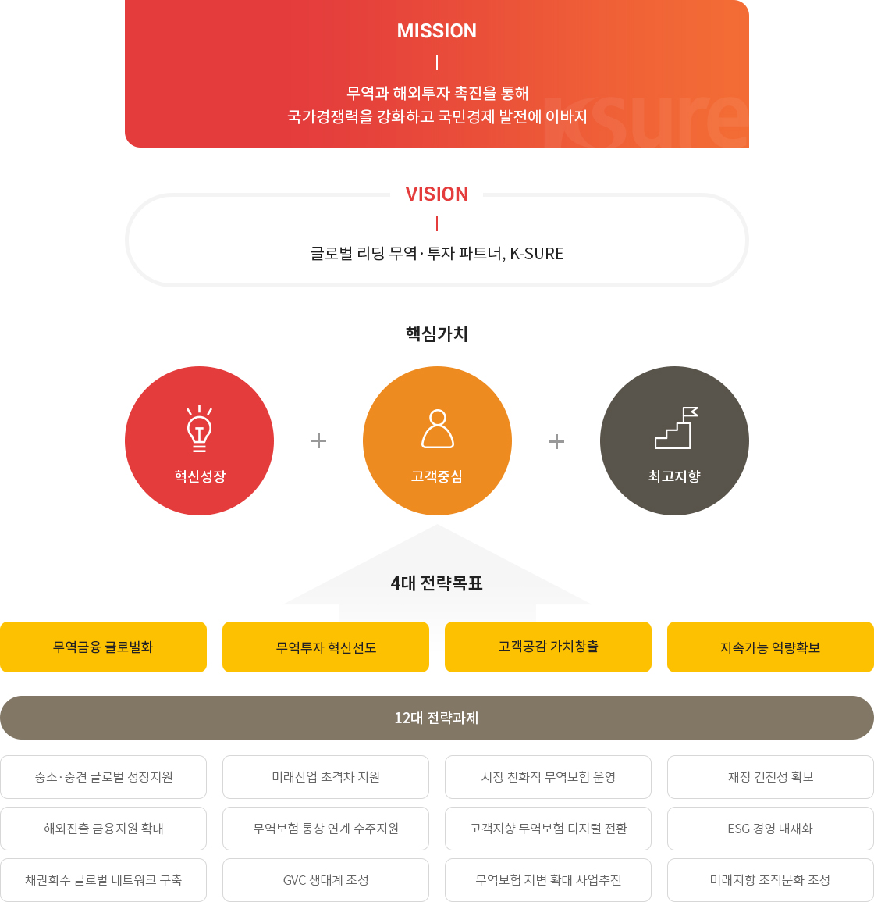
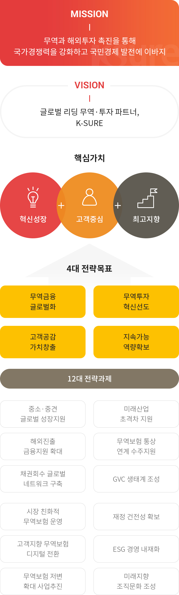

비전 및 경영전략


경영전략 체계도
- Mission
- 무역과 해외투자 촉진을 통해 국가경쟁력을 강화하고 국민경제 발전에 이바지
- Vision
- 국민과 고객에게 신뢰받는 무역·투자·금융 안전망
- 핵심가치
- 고객
- 혁신
- 포용과 상생
- 전략목표(4대)
- 포스트 코로나 무역·투자 선도
- 수출中企 혁신성장 견인
- 지속경영 역량 강화
- ESG 경영체계 실현
- 전략과제(12대)
- 한국판 뉴딜 수출생태계 구축
- Digital K-SURE 기반 구축
- 수출활력 제고 지원
- 혁신中企 육성 프로그램 강화
- 中企 정책지원 강화
- 고객 중심 서비스 혁신
- 전사 업무기반 혁신
- 조직 관리·운영 체계 효율화
- 무역보험기금 건전성 강화
- ESG 업무기반 구축
- 일자리 창출 및 사회적 가치 구현
- 윤리·안전·정보보안 시스템 장착